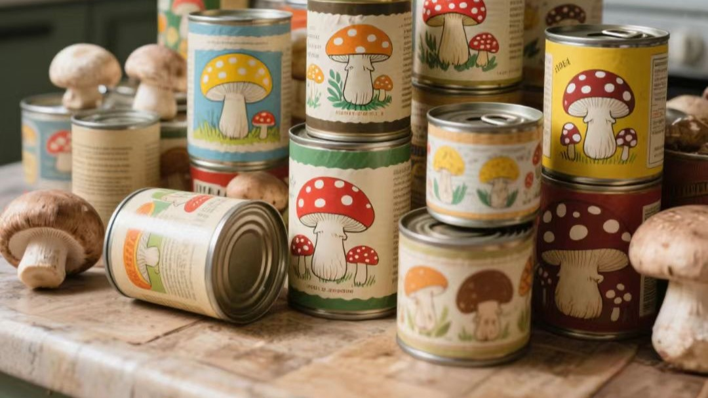

褐松茸
美国FDA认定的健康食品，被誉为"素牛排"。富含蛋白质、硒和多种维生素，采用12项专利智能工艺，全年高频采收，绿色有机，富硒健康。
蛋白质含量:
25-33%
粗纤维:
9%
胆固醇:
0%
种植方式:
智能化栽培（PLC+IoT）
可追溯:
区块链全程溯源
口感细腻 香味浓郁
低脂肪 无胆固醇
绿色有机 富硒健康
全年高频采收，稳定供应

双孢菇
传统美味，营养丰富，口感鲜美。采用三段发酵与智能环境控制，富含蛋白、维生素D和膳食纤维，绿色有机，全年稳定供应。
蛋白质含量:
3.2g/100g
维生素D:
0.4μg/100g
膳食纤维:
2.3g/100g
种植方式:
智能化栽培（PLC+IoT）
可追溯:
区块链全程溯源
口感鲜美
营养均衡
绿色有机
全年稳定供应

蘑菇罐头
采用新鲜蘑菇，低温杀菌工艺，保留营养，便于储存和运输，适合多种烹饪场景。
长保质期
调味品原料
绿色健康
有机认证标准
所有产品均通过国际有机认证，区块链全程溯源，确保无农药、无污染、纯天然，支持可持续发展。
无农药栽培
有机基质种植
全程可追溯
SS675:2021标准检测
品质承诺
每一朵蘑菇都经过严格的质量控制，从种植到餐桌，全程可追溯
有机认证
无农药、无污染
安全保证
全程质量监控
绿色种植
环保可持续
新鲜配送
真空预冷保鲜
产品特色
世界领先的智慧农业技术，品质保证
智能环境控制
PLC程序化控制，恒温恒湿恒氧
恒温控制
湿度调节
氧气浓度
真空预冷保鲜
1小时降温至1℃，保鲜20天
快速降温
延长保质期
保持新鲜度
优质菌种
美国Sylvan菌种厂，福建省农科院支持
国际认证
科研支持
品质保证
有机栽培
无农药、无污染，纯天然种植
无农药
无污染
纯天然
质量保证
智能种植环境
AI智能化仿生态冷库菇房，全年无间断生产
先进发酵工艺
全自动化技术，8条发酵隧道，40天种植周期
全程质量监控
从种植到餐桌，全程可追溯
专业保鲜运输
真空预冷技术，确保产品新鲜送达